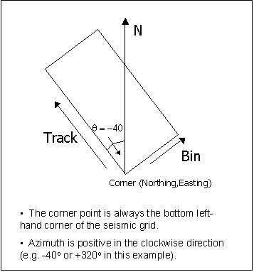
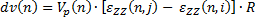
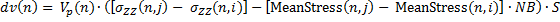
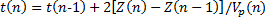
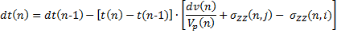

GVT calculates time-lapse time shifts due to geomechanical changes for zero offset seismic rays. This is an alpha release, with the output as property sets in the Data storage tree. In a future release, these properties can be converted to a seismic volume in .vt format, which can be read into 123DI/nDI/GeoSigns.
For more information on geomechanics and time-lapse time shifts see Hatchell et. al. (EP 2005-5429) or Bauer et. al. (EP 2007-5720).
GVT can be accessed using the Analysis menu or Settings menu. Configuring GVT consists of three stages :
There are two options for defining a seismic grid:
Select the keyfile using the browse option. The survey parameters will be automatically filled in to the GUI.
Note: For the beta release you may need to override the track/bin spacing to something coarser than that of a seismic survey (say 100 x 100m) to avoid memory issues – this will be fixed in a later release.
The grid is defined by a fixed corner point (bottom left-hand corner), length, width and azimuth as shown in the figure below.

Track/Bin Spacing
The track/bin spacing of the seismic survey.
In order to calculate the time-shifts and time-convert the result and initial velocity model is required. In the alpha release, GVT only accepts a velocity model based on the Vp values in the material models of the formations. In the future, it will also accept a single check-shot file, which gives a 1D velocity model for the whole survey, or a VEL3D format file.
At present two models are available in GVT the R factor model and S factor model, with more models expected to added in the future. Models can be applied on a per-formation basis. For each formation chose the desired model from the drop-down menu then set the model parameters in the adjacent box. For details of the the R-factor model see Hatchell et. al. (EP 2005-5429) and for the S factor model Bauer et. al. (EP 2007-5720).
Choose the times at which to run the analysis. This can be any combination of depletion stages but the first depletion stage should be the time of the actual or anticpated (if a feasability study) base time-lapse survey.
When all the GVT settings are complete the analysis is ready to run. GVT uses non-linear result values if they are available, otherwise linear results. GVT will create three output pointsets, based on the grid name (say "grid0") of the survey box:
If a pointset with the grid name postfixed by "_input" already exists, the analysis will re-use that pointset. You can force regeneration of the input by checking the box "Create new sample and analysis pointsets" in the main GVT dialog.
The following output properties are created (for each time-lapse <j, i> in point n):
   
R-Model:
S-Model:
The total two-way time t(n) from the top surface is calculated as
The delta two-way time dt(n) is:
In case of sea water, an initial delta two-way time of twice the subsidence divided by a velocity of 1500 m/s is used.
Note that the GVT calculation itself is rather fast, and while a progress bar is used, it may not be visible. Once the dialog disappears, check the Data storage tree for the output pointset.